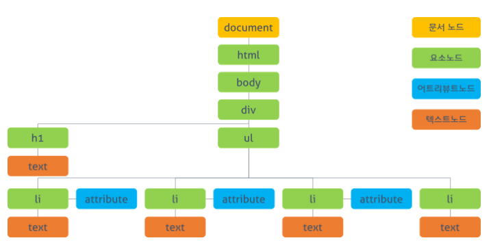

DOM 트리와 노드

모든 html태그는 요소element 노드가 됩니다.
html태그에서 사용하는 텍스트 내용은 자식 노드읜 text 노드가 됩니다.
html 태그에 있는 속성은 모두 자식 노드인 속성 attribute 노드가 됩니다.
주석은 주석comment 노드가 됩니다.
노드 리스트
DOM에 접근할 때 querySelectorAll() 매서드를 사용하면 여러 개의 노드를 한꺼번에 가져올 수 있음
이렇게
가져온 노드 정보들을 노드 리스트라고 함
document.querySelctorAll("p");//p태그로 작성된 모든 요소들을 가져옴
// 태그 갯수에 따라 NodeList(3)[p,p,p] 라고 표시될 것
// 만약 document.querySelctorAll("p")[1]// 으로 적었으면 두번째 인덱스의 값을 그대로 가져옴
// <;p>css 이런 형태로 반환